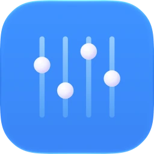
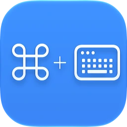

With time to tinker
totoantonio
Squeezing useful software into the edges of a busy day job.
Selected work

macEQSystem-wide audio equalizer for macOS. One EQ for every app, with spatial effects and presets.Lemon SqueezyApp Store · Soon
KeyboardSA fast lookup for Mac keyboard shortcuts. Press ⌘ + K, find the one you want, get back to work.ReleasedLemon Squeezy- UpscapePrivate AI image upscaling for Mac. Local Core ML models restore detail and export up to 4x, with no uploads.ReleasedLemon Squeezy
Every app here started as something I needed myself. I hit a problem on my own Mac, looked for a fix, and ended up building one because nothing out there did it the way I wanted. That is the whole origin story — need first, product second. It also means I am the first person who has to live with the result every day.
The apps get built in odd places. My work has me travelling most weeks — long drives, boat rides, airports, hotel rooms — so a lot of this was written on a laptop somewhere far from home. Being away is the hard part. My wife and our kids are the reason I work the way I do, and they are the reason I keep building on the side too. Everything here, in one way or another, is for them.
So I care about software that stays out of the way, explains itself clearly, and earns a place in your everyday tools. No account to create before you can try it. No subscription for something that should just work. No feature list padded out to look impressive. Software, thoughtfully made — out of need and necessity, and kept small enough that I can still stand behind every part of it.